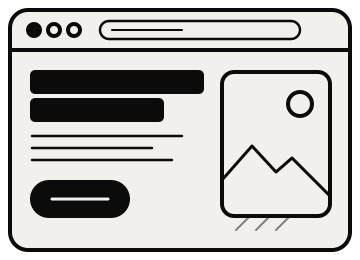
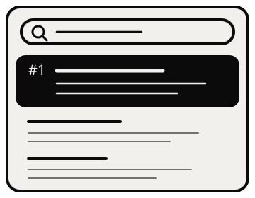
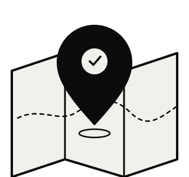
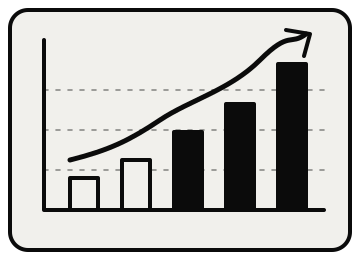

Services
Two disciplines, one goal: a site that people find and that turns them into enquiries. Hire one service, or let them work together.
Web Design
Fast, clear websites built to turn visitors into enquiries and bookings. Each one starts with your buyer: what they need to see, and in what order, before they'll reach out. Then I design and build around that. Mobile-first, quick to load and ready for search from day one.
- Custom design
- Conversion copy
- Booking integration
- Speed & technical setup
- Mobile-first build
- Analytics & tracking

SEO
Show up when buyers are already looking. I find the searches that lead to revenue rather than vanity traffic, then shape your pages and content so they rank and convert.
- Keyword research
- On-page optimisation
- Content planning
- Internal linking
- Metadata & schema
- Monthly reporting

Local SEO
Get picked when people search nearby. Your Google Business Profile, reviews and location pages are set up and kept up to date, so you climb the map pack and stay there.
- Google Business Profile
- Map pack visibility
- Location pages
- Review strategy
- Local citations
- Local rank tracking
Technical SEO Audits
A full technical audit of what's quietly holding your rankings back. You get a prioritised fix-list in plain English. Fix it in-house, or I'll handle it.
- Technical audit
- Site speed
- Crawl & index health
- Structured data
- Site architecture
- Prioritised fix-list
Conversion Copy
Design gets attention. Words get the booking. I write clear copy that tells buyers what you do, why it matters and what to do next, and works for search engines too.
- Positioning & messaging
- Homepage copy
- Service pages
- Calls to action
- SEO-led content
- Case study write-ups
Design + SEO, planned as one.
Most sites get designed first and "SEO'd" later, then the two fight each other. When they're planned together, every page has a search purpose and a conversion purpose from day one. The site ranks sooner and the traffic it earns actually turns into enquiries.
Plan both with me
Good questions
How does pricing work?
How soon can we start?
How long does a website take?
How long does SEO take to show results?
Are there contracts or minimum terms?
Not sure where
to start?
Book a 15-minute call. I'll look at what you have and tell you the one thing I'd fix first, whether or not you hire me.